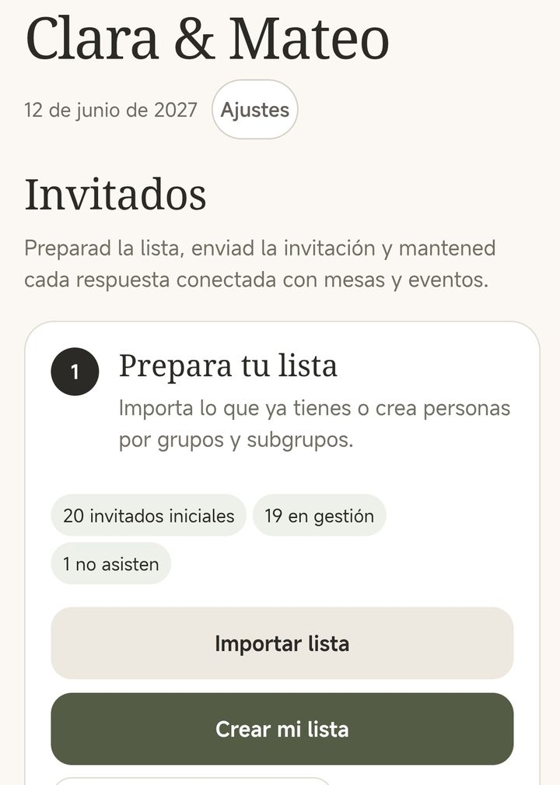
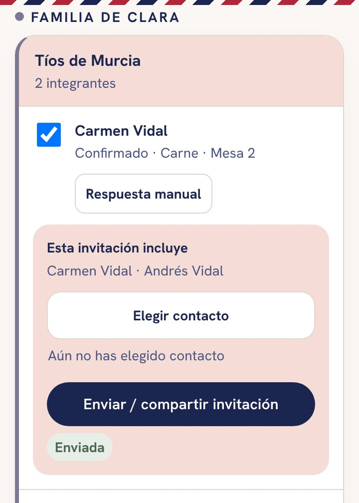
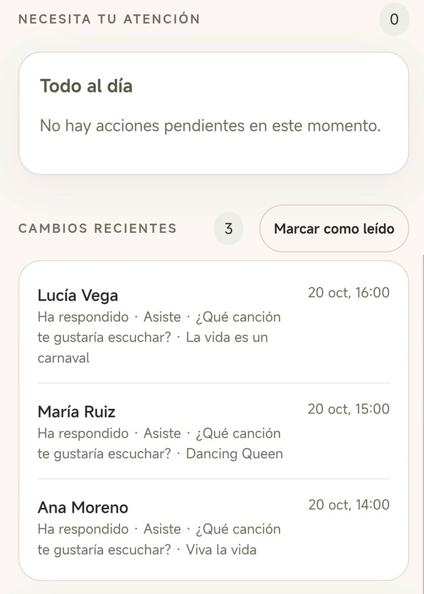
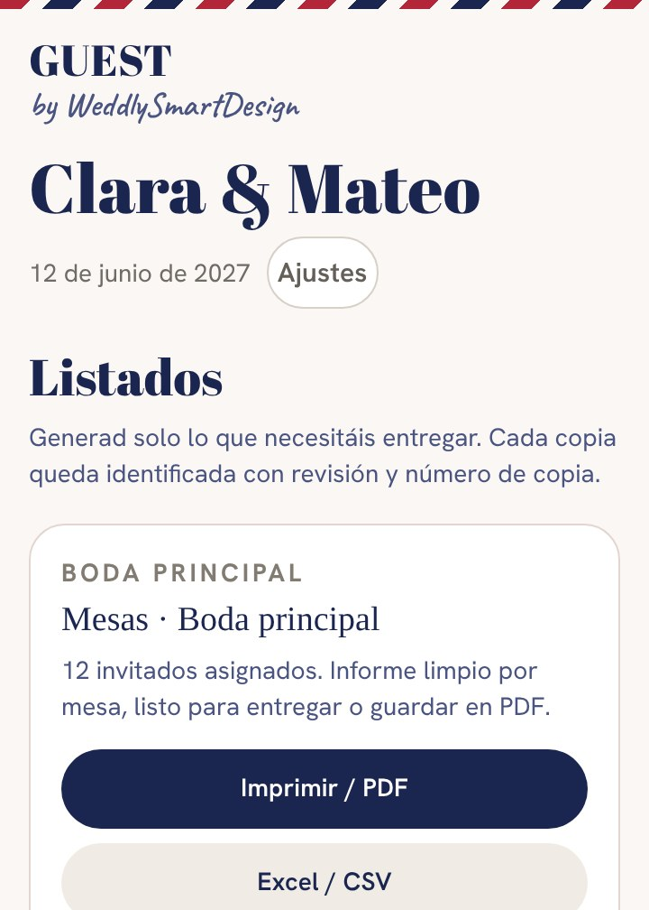
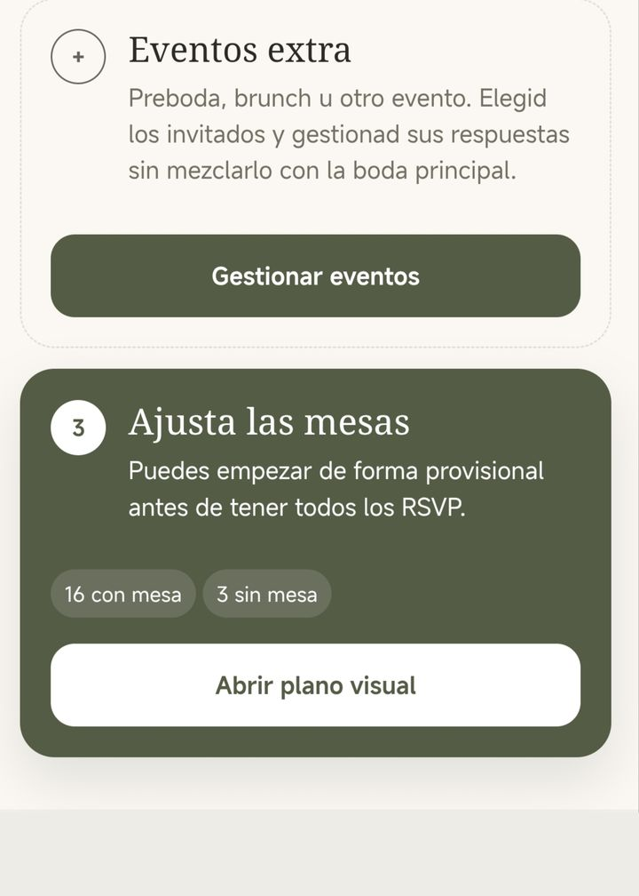

Guía de la app
Vuestra app GUEST, paso a paso.
Todo lo que necesitáis para abrirla, compartirla con vuestra pareja, enviar la invitación y organizar a vuestros invitados. Sin instalar nada de la tienda.
01
Qué recibís al aprobar la invitación
Os llega un email con el asunto «Vuestra invitación está lista para compartir». Guardadlo: es vuestra llave de todo.
- «Ver nuestra invitación»: la invitación definitiva, para que la veáis tal como la verán vuestros invitados.
- «Abrir la app de invitados»: vuestro acceso a GUEST. Con él añadís invitados, enviáis la invitación y recibís las respuestas.
- La factura: os llega en otro email, con un enlace para guardarla en PDF.
Enviad la invitación siempre desde la app. Así cada invitado recibe su propio enlace y su respuesta entra sola en vuestra lista, con su nombre.
02
Abrir la app y tenerla a mano
GUEST se abre desde el navegador del móvil. Si la añadís a la pantalla de inicio, queda como una app más.
- Abrid el email desde el móvil y pulsad «Abrir la app de invitados».
- Si se os abre dentro de Gmail, Outlook u otra app de correo, usad el menú de esa pantalla para abrirlo en Safari o en Chrome.
- Pulsad Abrir gestión de invitados y ya estáis dentro.
iPhone · Safari
- Pulsad el botón de compartir, el cuadrado con la flecha.
- Elegid «Añadir a pantalla de inicio».
Android · Chrome
- Pulsad el menú de los tres puntos.
- Elegid «Instalar aplicación» o «Añadir a pantalla de inicio».
También podéis hacerlo desde la propia app: Ajustes › Instalar en este dispositivo.

03
Compartirla con vuestra pareja
Los dos podéis usar la misma boda, cada uno desde su móvil. Lo que cambia uno aparece en el otro.
- Quien abrió la app primero entra en Ajustes › GUEST para los dos.
- Pulsa Invitar a mi pareja y después Copiar invitación segura.
- Se la manda a su pareja por WhatsApp. Ella o él la abre en su móvil y pulsa Unirme a la gestión de invitados.
La invitación para la pareja sirve una sola vez y durante 7 días. Si caduca, generad otra desde el mismo sitio.
No le reenviéis el email de entrega: ese enlace es el de la primera persona y, si lo abre otro móvil, el acceso se mueve a ese móvil.
04
Añadir a vuestros invitados
Empezad por la lista: es la base de los envíos, las respuestas, las mesas y los listados.
- Uno a uno, con su teléfono, o eligiéndolos de los contactos del móvil.
- De golpe: pegad una lista copiada de Excel o subid un archivo CSV o TXT.
- Por grupos y subgrupos, por ejemplo «Familia de Clara» › «Tíos de Murcia». Luego podréis filtrar y enviar por grupos.
- Por unidades: una pareja o una familia recibe un solo enlace y responde por todos.

05
Enviar la invitación
Cada invitado, o cada familia, recibe un enlace personal a vuestra invitación.
- Entrad en Envíos y respuestas.
- Elegid a quién se la mandáis. Podéis cambiar el texto que acompaña al enlace.
- Enviadla por WhatsApp, con el menú de compartir del móvil o copiando el enlace.
La app marca a quién se la habéis enviado y a quién no, para que no se os olvide nadie.
No reenviéis el enlace de una persona a otra: su respuesta se apuntaría con el nombre equivocado. Mandad a cada uno el suyo.

06
Las respuestas llegan solas
Cuando un invitado confirma desde la invitación, su respuesta entra en vuestra lista al momento, con todo lo que le preguntasteis.
- Quién viene y quién no, con acompañantes y niños si los permitisteis.
- Menús, alergias, transporte, alojamiento y vuestras preguntas propias.
- ¿Alguien os responde por teléfono o en persona? Apuntadlo vosotros en su ficha.
- Recordad a los que faltan con un mensaje a todos los pendientes.

07
Organizar las mesas
Dibujad el salón y sentad a la gente, viendo en todo momento quién queda sin sitio.
- Mesas redondas, rectangulares o presidencial, con su número de sillas.
- Arrastrad y girad las mesas en el plano, y añadid la pista o el escenario.
- Seleccionad a varios invitados a la vez y sentadlos juntos, o cread una mesa nueva con ellos.
- Los que no vienen no ocupan sitio.
08
Sacar los listados
Cuando os los pidan, los tenéis en un momento y siempre al día.
- Catering: menús, alergias e intolerancias por mesa.
- Mesas, transporte, alojamiento y respuestas.
- En Excel (CSV) o en PDF para imprimir o mandar. Cada copia lleva su número de revisión, para saber cuál es la última.

09
Preboda y otros eventos
¿Hacéis preboda, cena de bienvenida o brunch? Cada evento tiene su propia lista y su propia invitación sencilla.
- Ponedle nombre, fecha, hora y lugar, y una invitación con texto e imagen.
- Añadid personas o grupos enteros sin mezclarlos con la boda.
- Enviadla, recibid las respuestas aparte y mandad recordatorios.

10
Si algo no sale como esperabais
He cambiado de móvil o no me deja entrar
Abrid otra vez el email de entrega en el móvil nuevo y pulsad «Abrir la app de invitados». El acceso pasa a ese móvil y todo lo que teníais sigue ahí. El móvil anterior deja de tener acceso. A vuestra pareja no le afecta.
A mi pareja le dice que la invitación no es válida
Ha caducado (dura 7 días) o ya se usó. Generad otra en Ajustes › GUEST para los dos › Invitar a mi pareja.
Un invitado dice que no le abre la invitación
Reenviadle su enlace desde Envíos y respuestas. Si sigue sin abrirle, que pruebe desde otro navegador o escribidnos y lo miramos.
Ha cambiado la hora o el lugar después de aprobarla
Escribidnos por WhatsApp o a info@weddlysmartdesign.com. Corregimos ese dato y el cambio aparece en el mismo enlace que ya tienen vuestros invitados. Vosotros solo tenéis que avisarles.
¿Hasta cuándo funciona la invitación?
Hasta 90 días después de la boda. Después borramos vuestros datos y fotos, como explicamos en la política de privacidad. Si queréis guardar los listados, descargadlos antes.
¿Está en inglés para nuestros invitados de fuera?
La app está en español y en inglés. La invitación va con los textos que pusisteis en el cuestionario.
¿Os atascáis en algo?
Escribidnos y os ayudamos lo antes posible.